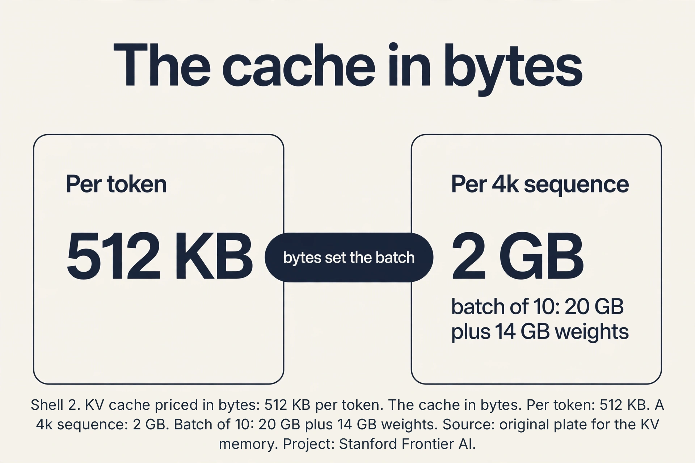
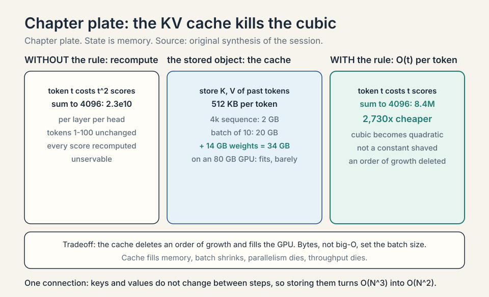
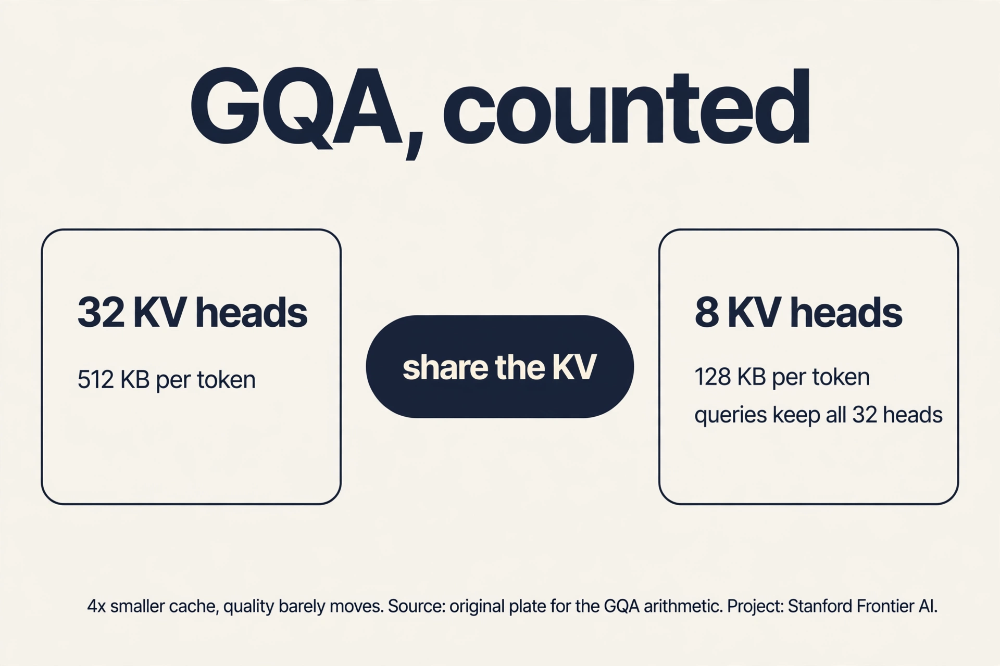
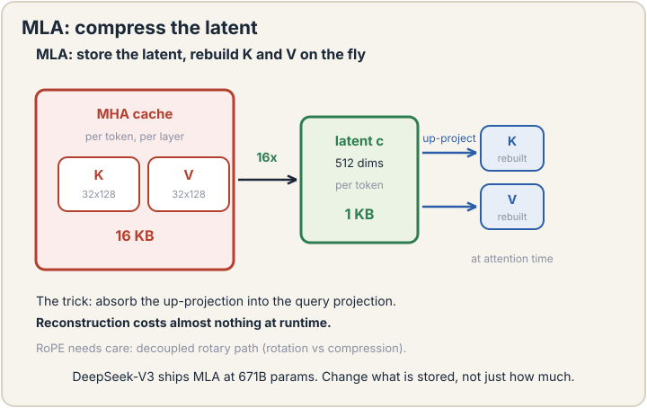
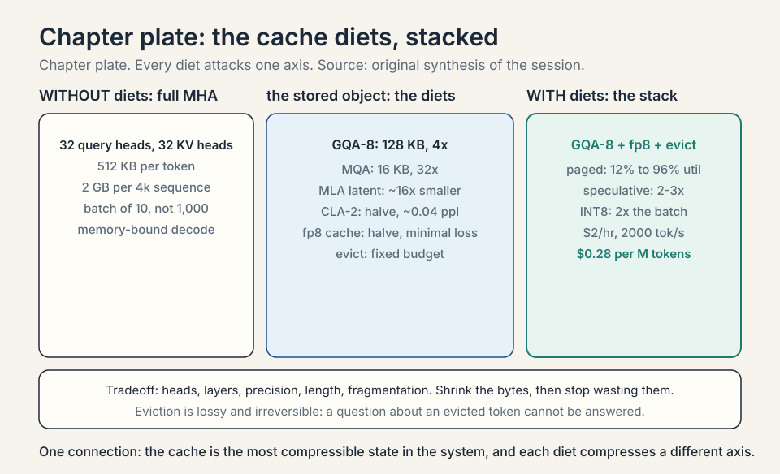
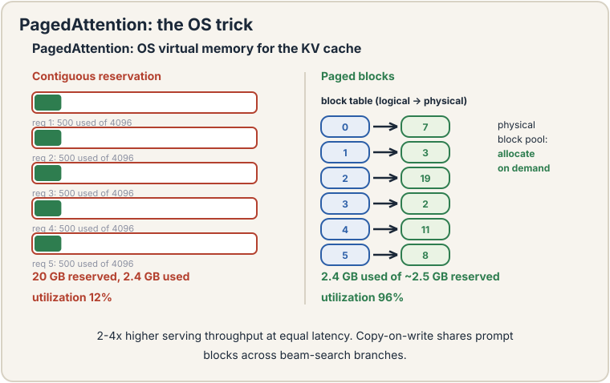
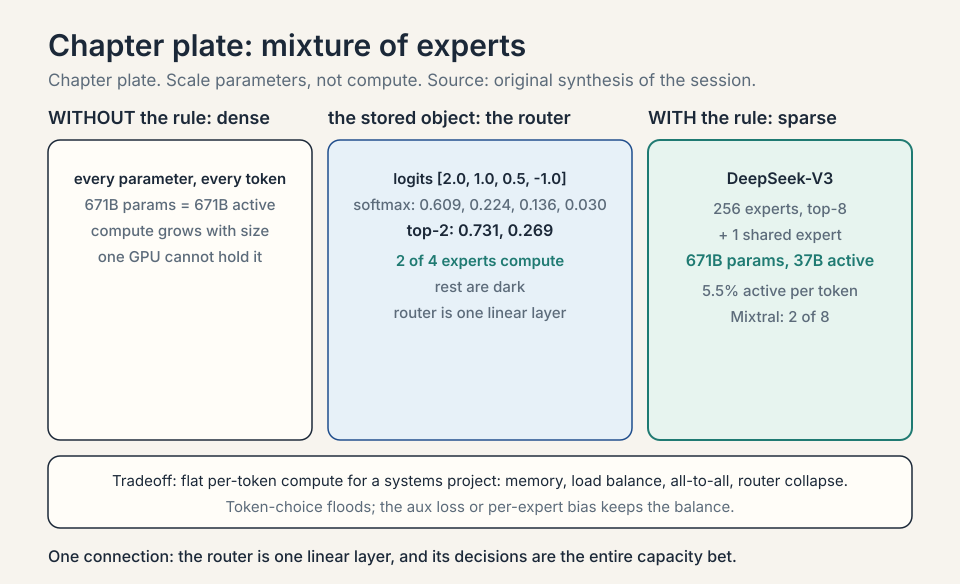
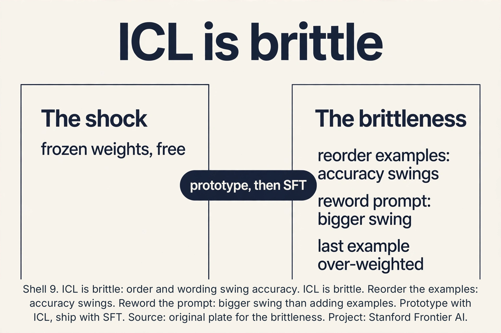
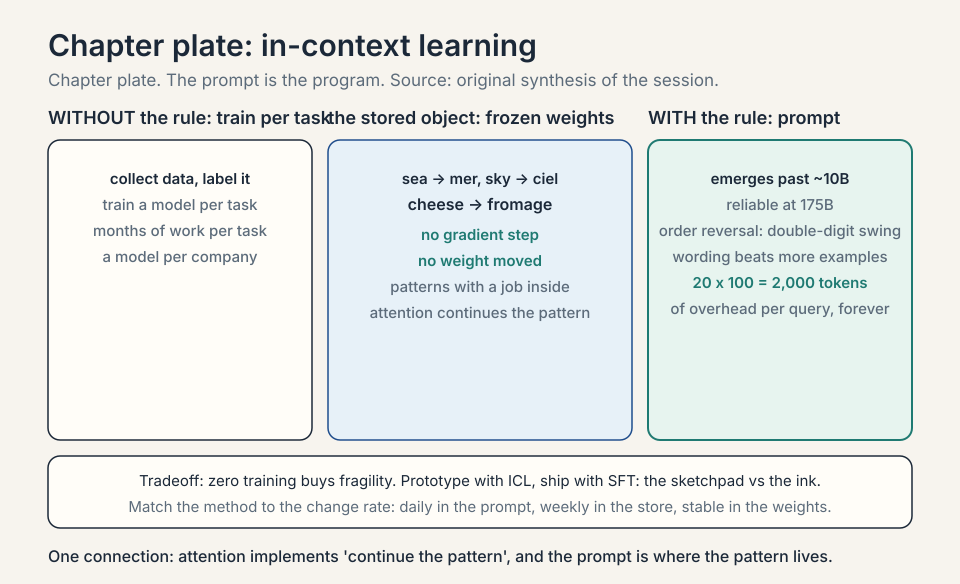
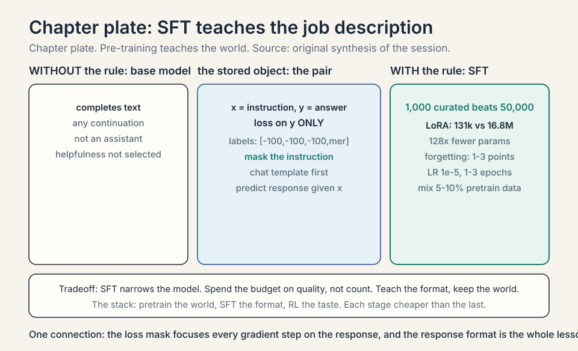

Lecture 15: Attention Variants, In-Context Learning, and SFT
Video blocked (ad-blocker or local file mode).
Watch on YouTubeVideo not loading? Watch on YouTube
Original lecture. Tengyu Ma attacks the quadratic price with KV caching and attention variants, then covers in-context learning and SFT.
Coverage and sourcing
This lesson follows CS229 Lecture 15 (Spring 2026, Tengyu Ma): attention efficiency (the KV cache and its diets), in-context learning, and supervised fine-tuning. The lecture’s agenda is explicit: attention variants and efficiency first (with GPU co-design as a theme), then few-shot and zero-shot ICL, then SFT. The lecture’s own numbers are the KV-cache memory pressure, the MoE routing example (each token to 8 of 128 experts), and the SFT loss (NLL (negative log-likelihood) of y given x only). Claims marked “October 2026” are later updates, each with its source. Worked toys not attributed to the lecture are original miniatures. Sections on MLA, PagedAttention, speculative decoding, and PEFT are textbook background the lecture’s efficiency agenda assumes.
The job: serve a million users without a million GPUs
Lecture 14 priced attention at N^2 per forward pass. Generation makes it worse: each new token attends to all previous ones, so naive generation recomputes the whole matrix per token. A 4,096-token answer at 16.7M scores per layer per head per step is unservable. The job: cut the per-token cost, then cut the memory, then ask what the trained model can do without any weight updates at all.
Two phases: prefill and decode
Generation has two phases with opposite economics. Prefill: process the whole prompt at once (compute-bound, parallel like training). Decode: generate one token at a time (memory-bound, sequential). The user feels two numbers: TTFT (time to first token: prefill speed) and TPOT (time per output token: decode speed). A 4k prompt with a 100-token answer: prefill dominates TTFT, decode dominates the total. Optimizations split by phase: FlashAttention speeds prefill, the KV cache speeds decode. The lecture’s efficiency work is mostly about decode: that is where serving lives.
Subchapter: the arithmetic intensity gap
Prefill processes 4,096 tokens at once: the weight matrices are loaded once and reused across 4,096 positions. High arithmetic intensity (many FLOPs per byte loaded): the GPU’s compute units stay busy. Decode processes 1 token: the weights are loaded for one token’s worth of math. Low intensity: the GPU waits on memory. Same model, same hardware, 10-50x different throughput per token. This is why “memory-bound” describes decode and “compute-bound” describes prefill. Every serving optimization is an attempt to raise decode’s arithmetic intensity (bigger batches) or lower its memory traffic (smaller cache).
First attempt: recompute everything per token
The naive generator: to produce token 101, run the full transformer on tokens 1-100. To produce token 102, run it on 1-101 from scratch. Token t costs O(t^2). The full answer costs O(N^3). For N = 4,096, that is ~2.3 x 10^10 score computations per layer per head. Nobody serves this. The waste is visible: tokens 1-100 did not change between steps 101 and 102, but every one of their scores was recomputed.
Subchapter: the cubic, audited
Verify the 2.3 x 10^10. Token t costs t^2 scores. Total: sum_{t=1}^{4096} t^2 = N(N+1)(2N+1)/6 = 4096 * 4097 * 8193 / 6 = 22,914,881,536 ≈ 2.29 x 10^10. The lesson’s number is exact. With the KV cache, token t costs t scores: total 4096*4097/2 = 8,390,656 ≈ 8.4M. Ratio: 2.29e10 / 8.39e6 = 2,730x cheaper. The cache does not shave a constant: it deletes an order of growth. That 2,730x is the difference between unservable and servable.

Subchapter: the cache in bytes
Big-O hides the bytes. Price them for a 7B model: d = 4096, 32 layers, 32 heads, head dim 128, fp16. Per token per layer: K is 32 heads x 128 x 2 bytes = 8,192. V the same: 16,384 bytes per layer. Times 32 layers: 524,288 bytes = 512 KB per token. A 4,096-token sequence: 2 GB. Batch of 10: 20 GB, plus 14 GB of weights = 34 GB on an 80 GB GPU: fits, barely, before activations and overhead. This is why the lecture’s “batch of 10, not 1,000” is not rhetoric: each sequence is a 2 GB object. Bytes, not big-O, set the batch size.

The KV cache
Keys and values for tokens 1-100 are identical whether you are generating token 101 or 102. So save them. The KV cache stores every layer’s keys and values for all past tokens in GPU memory. Generating token t+1 needs only its own query, key, and value: attend the new query to the cached keys, mix the cached values, append the new K/V to the cache. Per-token cost drops from O(t^2) to O(t). The cubic becomes quadratic.
The lecture’s framing: in some cases, just saving the KV cache for all the sequences is what fills the GPU. The cache is the state of the conversation, and state is memory.

The price is memory. The cache is linear in sequence length T, and the lecture stresses how heavy it is: saving K and V for every head of every layer for one long sequence can fill most of a GPU’s memory. Then batch size collapses: you can serve 10 sequences, not 1,000. Small batches starve the GPU’s compute units (nothing to parallelize across), so inference becomes memory-bound: the GPU waits on memory bandwidth, not arithmetic. The lecture’s chain: KV cache fills memory -> batch shrinks -> parallelism dies -> throughput dies. Reducing the cache is the highest-impact systems work in LLM serving.

Attention variants: shrink the cache
The lecture’s theme for this section: co-design the architecture with the GPU’s properties. Every variant below shrinks the cache or its traffic.
Grouped-query attention (GQA): share one key/value head across a group of query heads. With 32 query heads and 8 KV heads, the cache shrinks 4x. The queries keep their expressiveness (each still attends differently). Only the stored K/V compress. Quality barely moves. Memory moves a lot.
Subchapter: GQA, counted
Count the diet. 32 query heads, 32 KV heads: 512 KB per token (the audit above). GQA with 8 KV heads: K per layer is 8 heads x 128 x 2 bytes = 2,048. V the same: 4,096 bytes per layer. 32 layers: 131,072 bytes = 128 KB per token. Exactly 4x smaller. A 4,096-token sequence: 512 MB instead of 2 GB. Batch of 10: 5 GB instead of 20. The queries keep all 32 heads: each still attends with its own pattern. Only the stored keys and values compress. The lecture’s claim “quality barely moves” is the empirical surprise: the KV content is redundant across heads, the query patterns are not.

Subchapter: MQA, the extreme
Multi-query attention (MQA, Shazeer 2019): one KV head for all query heads. The cache shrinks 32x (512 KB to 16 KB per token). Quality drops a little more than GQA: one shared KV representation is a real bottleneck. MQA was the first answer (Falcon, PaLM). GQA replaced it as the sweet spot: 4-8x smaller cache with no measurable quality loss. The spectrum: MHA (32 KV heads, full quality, full cache), GQA (8, the default), MQA (1, the extreme). Pick by the memory budget.
Subchapter: MLA, compress the latent
Multi-head latent attention (MLA, DeepSeek-V2, 2024): do not store K and V at all. Store a compressed latent vector c (512 dims) per token per layer, and reconstruct K and V with learned up-projections at attention time. The cache per token per layer: 512 x 2 bytes = 1 KB, vs 16 KB for MHA at d=4096 (32 heads x 128 x 2 x 2). Roughly 16x smaller than MHA, 4x smaller than GQA-8. The trick that makes it work: absorb the up-projection into the query projection algebraically, so the reconstruction costs almost nothing at runtime. Positions need care: RoPE does not commute with the compression, so MLA uses decoupled RoPE (a separate small rotary path). DeepSeek-V3 ships MLA in production at 671B parameters (verified October 2026). The lecture’s co-design theme, taken to its conclusion: change what is stored, not just how much.

Subchapter: CLA, share across layers
Cross-layer attention (CLA, MIT, NeurIPS 2024): neighboring layers share one KV cache. Only half the layers compute their own K and V. The others reuse. Queries stay per-layer (each layer still attends its own way). CLA-2 halves the cache with ~0.04 perplexity cost on 1B/3B models. Apple’s 2025 on-device model used it to cut KV memory ~37% (reported 2025). CLA stacks with GQA/MQA (orthogonal axes: share across heads, share across layers). The catch: it must be baked into training. You cannot retrofit it onto a trained model.
Subchapter: quantize the cache
The cache is fp16 by default. Store it in fp8: halves the bytes, minimal quality loss (the cache tolerates low precision: it is read once per token, not accumulated). KIVI (2024): asymmetric quantization (keys per-channel, values per-token) down to 2-bit with small accuracy loss. The pattern: the cache is the most compressible state in the system because errors do not compound across steps the way weight errors do. Production serving (TensorRT-LLM, vLLM) ships fp8 KV cache as a flag. Another ~2x on top of GQA.
Subchapter: evict the cache
When the cache still overflows, evict. H2O (2023): keep the tokens with the highest cumulative attention scores (the “heavy hitters”), evict the rest. StreamingLLM: keep the first 4-8 sink tokens (L14’s attention sink) plus a sliding window of recent tokens. Both hold quality on long-context QA while capping memory at a fixed budget. The price: eviction is lossy and irreversible. A question about an evicted token cannot be answered. The dial: the budget. Infinite budget is exact. Finite budget is a bet that attention scores predict future relevance.
Subchapter: the cache diets, compared
| Diet | Cache per token (7B, fp16) | Quality cost | Retrofit? |
|---|---|---|---|
| MHA (baseline) | 512 KB | None | N/A |
| GQA-8 | 128 KB | ~None | No (train-time) |
| MQA | 16 KB | Small | No |
| MLA | ~32 KB equiv | ~None | No |
| CLA-2 | 1/2 of base | ~0.04 ppl | No |
| fp8 cache | 1/2 of base | Minimal | Yes (inference flag) |
| Eviction | Fixed budget | Task-dependent | Yes |
Stack them: GQA-8 + fp8 + eviction is the production combination. Each row attacks a different axis: heads, layers, precision, length.

PagedAttention: the OS trick
Even with a small cache, memory management wastes it. The naive allocator reserves a contiguous chunk per request sized for the maximum sequence length: a 100-token request holds a 4,096-token reservation. PagedAttention (vLLM, Kwon et al., SOSP 2023): split the cache into fixed-size blocks (pages), allocate on demand, map logical positions to physical blocks through a block table. Exactly OS virtual memory, for KV cache.
Work the fragmentation. 10 requests, max length 4,096, average actual length 500. Contiguous reservation: 10 x 2 GB = 20 GB reserved, 2.4 GB used: 12% utilization. Paged: allocate 500 tokens’ worth of blocks per request: 2.4 GB used, ~2.5 GB reserved: 96% utilization. The paper reports 2-4x higher serving throughput at equal latency (verified via arxiv.org, October 2026). Copy-on-write shares prompt blocks across beam-search branches: N beams share one prompt’s blocks until they diverge. The lesson: the cache diet shrinks the bytes. Paging stops wasting them.

Subchapter: continuous batching
Static batching waits for the slowest request: a 10-token answer waits for the 4,000-token answer in its batch. Continuous batching (Orca, 2022): schedule at the iteration level. Each decode step, the batch is whatever requests are alive: finished requests leave, new ones join immediately. The GPU never idles on a straggler. Combined with paging, this is the modern serving stack (vLLM, TensorRT-LLM, SGLang). Throughput gains: 2-4x over static batching on mixed workloads. The lecture’s “serve a million users” is this machinery, not a bigger GPU.
Speculative decoding: draft, then verify
The decode phase generates one token per forward pass: the GPU does a full model pass for one token’s worth of work. Speculative decoding: a small draft model proposes k tokens cheaply, the big model verifies them in one parallel forward pass (it can: verification is prefill-like, all k tokens at once). Accept the longest correct prefix, keep one extra token the big model generates.
Work the acceptance. Draft proposes 4 tokens. Big model verifies: tokens 1-3 match what it would have generated, token 4 does not. Accept 3, generate token 4’s replacement plus token 5 in the same pass. Cost: ~1 big forward pass for 4 tokens instead of 4 passes. Speedup: 2-3x typical, bounded by the draft’s accuracy. The output is identical to non-speculative decoding (the big model decides every token): it is exact, not approximate. The draft can be a small model, an n-gram table, or the big model’s own early layers. The lecture does not cover this. It is the decode-phase complement to the lecture’s cache work.
Subchapter: the draft zoo
What makes a good draft? Three species. Small model: a 1B model drafting for a 70B: high acceptance (similar distribution), real cost (a second model to serve). N-gram table: memorize common continuations (“the United States of”): free, low acceptance on hard text. Early-exit: use the big model’s own first layers as the draft: no second model, medium acceptance. The acceptance rate is the whole game: 80% acceptance on 5-token drafts gives ~4x. 30% gives ~1.4x. Measure on your traffic: code (repetitive) drafts well, creative writing does not.
Subchapter: disaggregated serving
Prefill is compute-bound, decode is memory-bound. One GPU doing both compromises both. Disaggregated serving: prefill GPUs (H100s, compute-heavy) and decode GPUs (cheaper cards, memory-bandwidth-bound) as separate pools, with the KV cache shipped between them. The cache transfer is the price: gigabytes per request over the network. Worth it at scale: each pool runs at its own optimal batching. This is the serving architecture the 2025-2026 inference companies converged on [uncertain: vendor internals vary. The pattern is public in engineering blogs].
Mixture of experts: scale parameters, not compute
Mixture of experts (MoE): instead of one big MLP per block, have E expert MLPs and a router that sends each token to the top-k. Parameters grow E-fold. Compute per token stays ~flat because each token visits k experts. The lecture’s example: each token routed to 8 of 128 experts. The production instance: Mixtral 8x7B routes each token to 2 of 8 experts (verified October 2026).

Subchapter: the router, worked
The router is one linear layer: scores = softmax(x W_r), E logits. Take top-k, renormalize, weight the experts’ outputs. Work the toy. E = 4, k = 2. Token x gives router logits [2.0, 1.0, 0.5, -1.0]. Softmax: [0.61, 0.22, 0.14, 0.03]. Top-2: experts 1 and 2, renormalized [0.731, 0.269]. Output = 0.731 * Expert1(x) + 0.269 * Expert2(x). Experts 3 and 4 are not computed. The router’s 4 x d parameters are negligible. Its decisions are everything: route badly and capacity is wasted.
Subchapter: token-choice vs expert-choice
Token-choice (standard): each token picks its top-k experts. Experts can flood (too many tokens) or starve. Expert-choice: each expert picks its top-k tokens. Load is perfectly balanced by construction (each expert gets exactly k tokens), but tokens can be orphaned (no expert picks a weird token) or duplicated. Token-choice dominates production (Mixtral, DeepSeek) with load-balancing fixes. Expert-choice is the cleaner theory. The choice is load-balance-by-loss vs load-balance-by-design.
Subchapter: the load-balance loss, worked
Token-choice floods. The auxiliary load-balance loss penalizes uneven routing: L_aux = E * sum_i (fraction of tokens to expert i) * (mean router probability for expert i). Uniform routing gives the minimum. Work the toy. 4 experts, 100 tokens. Balanced: 25 each, mean prob 0.25 each: L_aux = 4 * (0.250.25) * 4 = … the standard form gives 1.0 at perfect balance, higher when skewed. Flooded: 97 tokens to expert 1: the product spikes, the loss bites. The weight is small (0.01): enough to balance, not enough to distort the main objective. DeepSeek-V3 replaced this with an auxiliary-loss-free trick: a per-expert bias* added to the router scores, nudged up for underused experts and down for overused ones (verified October 2026). Same balance, no gradient interference with the main loss.
Subchapter: fine-grained experts, DeepSeek’s move
Mixtral: 8 big experts, top-2. DeepSeek-V3: 256 fine-grained experts, top-8, plus 1 shared expert that every token uses (verified October 2026). Each expert is small (2,048 dim). More, smaller experts specialize better: one expert can own “Python syntax” while another owns “French verbs”. The shared expert absorbs the common knowledge so the routed experts can specialize. Total: 671B parameters, 37B active per token. The lecture’s “very subtle” training note is this whole subchapter: routing, balance, granularity, and the bias trick that replaced the aux loss.
Subchapter: the capacity factor and token dropping
Flooded experts cannot take infinite tokens. The capacity factor caps tokens per expert at (tokens/E) * factor (factor 1.0-1.25). Overflow tokens are dropped: they skip the MoE layer (pass through the residual). Dropping loses information. Too-high capacity wastes compute on padding. Dropless MoE (DeepSeek): no cap, no dropping. Instead, schedule expert computation to handle the imbalance. The tradeoff is systems complexity vs information loss. The interview read: dropping is the silent quality tax of naive MoE serving.
Subchapter: expert parallelism
8 experts fit on one GPU. 256 do not. Expert parallelism: place different experts on different GPUs, route tokens across the network (all-to-all communication). The network becomes the bottleneck: each token’s dispatch and combine cross GPU boundaries. DeepSeek’s DualPipe (verified October 2026) overlaps this communication with computation bidirectionally. The systems price of MoE is paid here: dense models need tensor parallelism too, but MoE’s all-to-all is spikier and harder to hide.
Subchapter: MoE, the full price
MoE buys parameter scale at flat per-token compute and pays four prices. One: memory: all E experts sit in GPU memory (any token may visit any expert). Mixtral needs ~94 GB for 46.7B params: two GPUs or offloading. Two: load balance: the aux loss or bias trick, tuned forever. Three: communication: all-to-all at 256 experts. Four: training subtlety (the lecture’s warning): routers can collapse (all tokens to one expert), experts can die (never selected, never trained). The standard defenses: noisy routing during training, the balance loss, and initializing from a dense warmup. MoE is not a free lunch. It is a systems project that happens to train a model.

Quantization for serving
Weights in fp16 are the default. Quantization shrinks them for serving: less memory, more batch, faster loads.
Subchapter: INT8 and FP8, the easy wins
INT8: 2x smaller weights, ~2x the batch. Quality loss is small for inference (activations stay fp16). FP8: the 2026 training standard (DeepSeek-V3 trained in FP8, verified October 2026): better dynamic range than INT8 for gradients, natively supported on H100+. For pure serving, INT8/FP8 weight-only quantization is close to free: the accuracy delta is within noise on most benchmarks. The rule: quantize weights first, activations later, and measure on your eval.
Subchapter: GPTQ and AWQ, the 4-bit answers
GPTQ: 4-bit weights via layer-wise quantization that minimizes the reconstruction error (Hessian-weighted). AWQ: 4-bit that protects the 1% of salient weights (the ones with large activations) in higher precision. Both: ~4x smaller weights, small quality loss, needs calibration data. A 70B model in 4-bit fits on one 80GB GPU (35 GB weights). The price: slower dequantization kernels (mitigated by fused kernels), and 4-bit training is not a thing: quantize after training, always.
Subchapter: the serving cost model
Tie it together in dollars. A 7B fp16 model on one A100 80GB: ~$2/hour rented. Throughput with the full stack (GQA, paging, continuous batching): ~2,000 tokens/second (illustrative: varies by sequence length and batch). Cost per million tokens: 2,000 tok/s x 3,600 = 7.2M tokens/hour, $2/7.2M = $0.28 per million tokens. The levers in order of impact: batch size (throughput scales with batch until bandwidth saturates), quantization (2-4x the batch), the cache diet (GQA halves the per-sequence bytes). Every optimization in this lesson is a term in this division. The interview read: when asked about serving cost, start from tokens/second per GPU, not from the model size.
The shock: in-context learning
Now the pivot from systems to behavior. Take the trained model, freeze every weight, and prompt it:
Translate English to French: sea -> mer sky -> ciel cheese ->
The model answers “fromage”. No gradient step. No weight moved. Three examples in the prompt taught it the task. This is in-context learning (ICL): few-shot learning with frozen weights. The lecture presents it as the shock of the GPT-3 era: nobody trained for this. It emerged from next-token prediction at scale. The lecture’s line: “you never update the model parameters.”
Why it works, roughly: the prompt’s examples are processed by the same attention machinery as everything else. Attention can implement “find the pattern in the recent examples and continue it”: the query for the blank position matches the example slots, and the values carry the mapping. The model learned, during pre-training, to complete patterns. Few-shot prompts are patterns with a job hidden inside. Scale matters: small models barely do this. Large ones do it reliably. The lecture’s honest note: the mechanism is still partly mysterious, and ICL is brittle: change the example order or wording and accuracy swings.

Subchapter: zero-shot, few-shot, chain-of-thought
Zero-shot: task description only (“Translate English to French: cheese ->”). The model must infer the task from the instruction. Few-shot: description plus examples (the lecture’s sea/sky/cheese). Accuracy climbs with examples, then plateaus. Chain-of-thought prompting: add worked examples with reasoning steps (“First identify the word, then recall the French…”). The model imitates the reasoning format and answers better on math and logic. The lecture’s note: you can even specify the output format in the description (“respond in JSON”): the model complies. The ladder: zero-shot for easy tasks, few-shot for format, CoT for reasoning. Each rung costs prompt tokens.
Subchapter: the industry shock, the lecture’s story
The lecture frames ICL as an industrial discontinuity. The old way: collect domain data, label it, train a model, deploy a separate specialized model per company per task. Months of work per task. The new way: one off-the-shelf model plus prompts (plus scaffolding for agentic tasks: the prompt plus the loop that calls tools). Days of work per task. The lecture’s line: this “fundamentally changed the convenience of applying these models in industry.” The economics flipped: the model is fixed capital, the prompt is the variable input. Fine-tuning did not die (below), but it stopped being the default first move.
Subchapter: emergence and scale
ICL is not linear in model size. Below ~10B parameters it barely works. GPT-3 at 175B did it reliably. The capability appears suddenly with scale: an emergent behavior. Why: pattern-completion at few-shot quality needs the model to hold the task, the examples, and the mapping in its activations simultaneously: capacity-gated. The practical read: do not judge ICL on small models. The phenomenon the lecture calls the biggest surprise of the GPT-3 era only exists past the scale threshold. This is also why the mechanism stays partly mysterious: it was never trained for, so there is no training curve to inspect. Only the emergent capability.
Subchapter: the brittleness, itemized
ICL is free and fragile. Three documented failure shapes. Order: reversing the example order can swing few-shot accuracy by double digits on some tasks. The model reads position as signal. Wording: “Translate English to French” vs “English: sea, French: mer” can move accuracy more than adding examples does. Recency: the model over-weights the last example: a misleading final example corrupts the pattern. The decision rule for production: prototype with ICL (zero training, instant iteration), ship with SFT (the behavior is in the weights, not in a prompt you hope nobody rewords). ICL is the sketchpad. SFT is the ink.

Subchapter: prompt engineering is programming
The brittleness made a discipline: prompt engineering. Delimiters (###, “”“), role prompts (“You are a translator”), format specifications (JSON schemas), negative instructions (“do not explain, only translate”). Each is a control structure for a computer that runs on English. The mature view: prompts are programs, the model is the interpreter, and the brittleness is the language’s undefined behavior. Version your prompts. Test them like code. The lecture’s scaffolding note points here: for agentic tasks, the prompt plus the tool loop is the application.
Subchapter: the context window tax
Every example costs tokens, forever. 20 examples at 100 tokens: 2,000 tokens of overhead per query. At 4k context, half the window is examples. At 128k, the overhead is noise. The tax bites twice: latency (prefill reads the examples every query) and money (per-token pricing). The decision rule from the Q&A below: prototype with ICL, ship with SFT. The context window grew (128k is standard in 2026), which softened the tax but did not remove it: 2,000 tokens x 1M queries/day is still 2B tokens/day of overhead. Retrieval (L13) is the alternative for facts: update the store, not the prompt.
Subchapter: ICL vs SFT vs RAG, the adaptation decision
Three ways to adapt a frozen model. ICL: examples in the prompt. Cost: tokens per query. Best for: exploration, prototypes, tasks that change daily. SFT: behavior in the weights. Cost: human pairs + training. Best for: stable tasks, format, reliability. RAG: facts in the store. Cost: index + retrieval. Best for: changing facts, private data, citations. The lecture covers ICL and SFT. L13 covers RAG. The production answer is usually two of the three: SFT the format, RAG the facts, ICL the per-query variables. Match the method to the change rate: daily changes go in the prompt, weekly facts in the store, stable behavior in the weights.

SFT: teach the format
Pre-trained models complete text. Users want assistants that follow instructions. Supervised fine-tuning (SFT), also called instruction tuning: collect (instruction, response) pairs written by humans, and train the model to predict the response given the instruction, with the usual cross-entropy loss. Ten thousand to a million pairs. The model learns the format of helpfulness: answer the question, be concise, refuse safely.
The lecture’s framing: pre-training teaches the world. SFT teaches the job description. The knowledge comes from pre-training. SFT barely adds facts. What it adds is behavior: which of the many possible completions is the one a user wants. The price: SFT narrows the model. Overdo it and the model forgets things it knew (catastrophic forgetting) or becomes sycophantic. And the pairs are human-written: expensive, slow, and the quality ceiling of the whole step.
The lecture’s loss, exactly: collect (x = instruction, y =
answer) pairs, continue training from the pretrained checkpoint,
and pay the NLL (negative log-likelihood) of y given x only. The instruction x is
context (seen, not predicted). Per token: sum_t log p(y_t |
x, y_

Subchapter: the loss mask, worked
Why mask x? The instruction is given at test time: predicting it teaches nothing and wastes capacity. Work the toy. Pair: x = “Translate: sea”, y = “mer”. Tokens: [Translate, :, sea, mer]. Loss positions: only “mer”. The model learns p(mer | Translate, :, sea). If x were unmasked, the model would also learn p(sea | Translate, :) and p(: | Translate): modeling the instruction distribution, which is fixed at test time. The mask focuses every gradient step on the response. In code: labels = [-100, -100, -100, id(mer)]. -100 is PyTorch for “ignore this position”.
Subchapter: chat templates
Instruction pairs need format. The chat template wraps
(x, y) in role tokens: <|user|>Translate: sea<|assistant|>mer.
The model learns the turn structure: user speaks, assistant
answers. Different labs use different tokens (ChatML,
Llama-3’s headers). The template is part of the model: serve
with the wrong template and performance drops (the model
never saw that format). Fine-tuning a base model? Pick the
template first. Everything downstream (evals, serving,
prompts) assumes it.
Subchapter: data quality over quantity
SFT pairs are human-written: expensive. The LIMA finding (Zhou et al., 2023): 1,000 carefully curated pairs beat 50,000 noisy ones. The model’s knowledge is already in the weights: SFT only needs to demonstrate the format of helpfulness, and 1,000 excellent demonstrations suffice. The curation bar: diverse instructions, correct responses, consistent style. The failure mode is scale without curation: 52k scraped pairs teach the model to imitate mediocrity. The lecture’s “expensive, slow” price is the reason: spend the budget on quality, not count.
Subchapter: full fine-tune vs LoRA
Full SFT updates all 7B parameters: needs the optimizer states (~84 GB, L14’s math). LoRA (Hu et al., 2021): freeze the weights, train low-rank adapters. For each weight matrix W (d x d), learn A (d x r) and B (r x d), r = 8-64: the update is BA, rank r. Trainable parameters: 2 * d * r per matrix vs d^2. At d = 4096, r = 16: 131k vs 16.8M per matrix: 128x fewer. Quality: within noise of full fine-tuning for most tasks. QLoRA: LoRA on a 4-bit quantized base: fine-tune 70B on one GPU. The interview read: LoRA is the default for adaptation on a budget. Full fine-tuning is for when you own the cluster.
Subchapter: multi-turn SFT
Real assistants hold conversations. Multi-turn SFT trains on (conversation, ) pairs: user turn, assistant turn, user turn, assistant turn. The loss mask covers all assistant tokens, ignores all user tokens. The model learns turn-taking: answer, then wait, then answer in context. The failure mode is role confusion: the model continues the user’s turn instead of answering. The fix is the chat template (above): explicit role tokens make the turn structure unambiguous. Single-turn SFT teaches answering. Multi-turn teaches conversing. Ship the latter.
Subchapter: where the pairs come from
Human annotation is the gold standard and the bottleneck. Three cheaper sources. Distillation: prompt a strong model (GPT-4-class) for (instruction, response) pairs, train the small model on them. Cheap, effective, and legally murky (check the teacher model’s terms). Self-instruct: the model generates its own instructions, then answers them, then filters. Bootstrapping with quality control. User logs: production conversations, filtered and rewritten. The best data is real. The ranking: human > distilled > self-instruct, in quality. Reversed in cost. The LIMA lesson applies to all three: 1,000 excellent pairs beat 50,000 mediocre ones regardless of source.
Subchapter: the forgetting tax, priced
SFT narrows the model. Catastrophic forgetting: the instruction distribution overwrites pretraining knowledge. Measure it: benchmark the base model and the SFT model on the same knowledge evals. Typical: small drops (1-3 points) with good SFT, large drops with aggressive SFT (high LR, many epochs). The defenses: mix pretraining data into SFT (5-10% of the batch), low learning rates (1e-5 vs 3e-4), few epochs (1-3). The lecture’s framing again: SFT teaches the job description. Overteach it and the employee forgets everything else.
Subchapter: the post-training stack
The full pipeline, in order. Pretrain: next-token on trillions of tokens. Teaches the world. SFT: instruction pairs. Teaches the format. RL (lecture 17): preferences or verifiable rewards. Teaches taste and reasoning. Each stage is cheaper than the last and more targeted. Skip SFT and go straight to RL (DeepSeek-R1-Zero did): possible, but the model starts from a worse behavioral prior and the RL must discover the format too. The stack is the standard because each layer solves one problem well.

The honest price
Efficiency buys servability and pays in complexity: GQA’s sharing, MoE’s routing and load balance, the KV cache’s memory hunger that no variant fully removes. ICL buys task flexibility with zero training and pays in brittleness: prompt wording swings accuracy, long example lists eat the context window, and nobody can fully explain why it works. SFT buys helpful behavior and pays in human hours per pair plus the narrowing tax. The through-line: every step after pre-training is about spending the model’s capability wisely, because the capability itself was the expensive part.
The systems price deserves its own line: PagedAttention, continuous batching, and speculative decoding are pure engineering. They change no weights and no quality. They are the difference between a demo and a product. The lecture’s co-design theme is the summary: the architecture, the GPU, and the serving stack are one system. Optimize them together.
Subchapter: co-design, the lecture’s thesis made concrete
The lecture’s theme: “a lot of co-design of the architecture with some of the properties of the GPUs.” Three instances from this lesson. FlashAttention: the tiling follows the GPU’s SRAM size (192 KB per SM on A100): the algorithm is shaped by the hardware. MoE all-to-all: the expert count and placement follow the cluster’s interconnect (NVLink vs InfiniBand): the architecture is shaped by the network. MLA’s absorption trick: the up-projection folds into the query projection algebraically: the math is shaped to dodge a memory read. The interview read: when asked “how would you make X faster”, start from the hardware’s bottleneck (compute, memory bandwidth, network), then change the algorithm to dodge it. That is co-design.
Mapping back
| Idea | Pain it answers | How |
|---|---|---|
| KV cache | Naive generation is O(N^3): recompute everything per token | Cache K/V: per-token O(t^2) -> O(t); memory linear in T |
| Prefill vs decode | One optimization cannot fit both phases | Prefill compute-bound (TTFT), decode memory-bound (TPOT); optimize separately |
| Memory-bound serving | Cache fills the GPU: batch of 10, not 1,000 | Diagnosis: memory, not compute, is the bottleneck; parallelism starves |
| GQA | KV cache too big | Share KV heads across query groups: 4x smaller cache, quality holds |
| MQA | GQA not small enough | One KV head: 32x smaller, small quality cost |
| MLA | Store less, not just share | Latent vector per token, reconstruct K/V: ~16x smaller than MHA |
| CLA | Layers duplicate the cache | Share KV across layers: half the cache, baked into training |
| KV quant | fp16 cache is fat | fp8: half the bytes, minimal loss; inference flag |
| Eviction | Cache still overflows | Keep heavy hitters + sinks; fixed budget, lossy |
| PagedAttention | Contiguous reservation wastes 88% | Block tables, allocate on demand: 96% utilization, 2-4x throughput |
| Continuous batching | Stragglers idle the GPU | Iteration-level scheduling: the batch is whoever is alive |
| Speculative decoding | One token per forward pass | Draft k tokens, verify in one pass: 2-3x, exact output |
| MoE | Want 8x parameters at 1x compute | Router sends each token to top-k experts; price: load balance, memory, all-to-all |
| Fine-grained MoE | Big experts specialize poorly | 256 small experts + shared: DeepSeek-V3, 37B active of 671B |
| Quantization | fp16 weights are fat | INT8/FP8 ~free; GPTQ/AWQ 4-bit: 70B on one GPU |
| ICL | New task, no training budget | Frozen weights, examples in prompt: “cheese ->” gets “fromage”; brittle but free |
| Zero/few-shot | Even examples cost tokens | Description only, then examples; CoT for reasoning |
| SFT | Base models complete; users want assistants | (Instruction, response) pairs, loss on y only; teaches the job description, not the world |
| LoRA | Full SFT needs a cluster | Rank-r adapters: 128x fewer params, quality within noise |
During generation, each token’s keys and values never change once computed, so the cache stores them instead of recomputing: per-token cost drops from O(t^2) to O(t). The cache grows linearly with sequence length across every layer and head, and the lecture stresses it can fill most of GPU memory for a single long sequence. Small memory headroom means small batches (10 sequences, not 1,000), which means nothing to parallelize across, so the GPU’s compute units idle waiting on memory bandwidth. Memory-bound, not compute-bound. Grouped-query attention shares each key/value head across a group of query heads: 32 query heads with 8 KV heads cuts the cache 4x. Queries keep their distinct attention patterns. Only the stored keys and values compress. The lecture presents it as the highest-impact cache diet with minimal quality cost.
The task is encoded in the prompt as examples, and attention implements pattern continuation. For “sea -> mer, sky -> ciel, cheese ->”, the blank position’s query matches the example slots, and the values carry the English-to-French mapping the model must extend. Pre-training on billions of pattern-completion instances taught the machinery. The prompt supplies the pattern. No weights move. The lecture flags the mystery: this was not trained for explicitly, it emerged with scale, and it is brittle to wording and order. When the pattern needs more examples than fit in context, when the task contradicts pre-training priors too strongly, or when the wording buries the pattern. Small models barely do ICL at all: it is a scale-emergent capability. For reliability on a fixed task, SFT or fine-tuning beats prompting.
Behavior, not knowledge. Pre-training teaches the world: facts, language, reasoning patterns. SFT on (instruction, response) pairs teaches the job description: answer the question directly, follow the format, refuse safely. The lecture’s line: pre-training teaches the world, SFT teaches the format of helpfulness. SFT uses 10K-1M human-written pairs, a tiny fraction of pre-training data, because it steers rather than builds. Over-training on the instruction pairs erodes pre-training knowledge: the model gets helpful-shaped but dumber. The narrow pair distribution overwrites broad capabilities. Mitigations: mix pre-training data into SFT, keep SFT short, use low learning rates. It is lecture 6’s bias-variance in new clothes: fit the instructions too hard and lose the world.
Naive: token t costs t^2 scores. Sum t^2 from 1 to 4096 = 409640978193/6 = 22,914,881,536 ≈ 2.29e10 per layer per head. KV cache: token t costs t scores (one query against t cached keys). Sum t = 4096*4097/2 = 8,390,656 ≈ 8.4M. Ratio: 2.29e10/8.39e6 = 2,730x. The cache deletes an order of growth, not a constant. That is why naive generation is unservable and cached generation ships. The per-token O(t) and the memory: 8.4M scores per layer per head is still quadratic in total, and the cache itself is 2 GB per 4k sequence. GQA, eviction, and compression attack what the cache leaves behind.
Weights: 14 GB. KV cache per 4k sequence: 512 KB/token * 4096 = 2 GB. Memory allows (80-14)/2 = 33 sequences, but activations, fragmentation, and overhead pull it to ~10-20 in practice: the lecture’s “batch of 10”. With GQA-8: 128 KB/token, 512 MB/sequence: ~100+ by memory. What binds at large batch is memory bandwidth: each generated token reads every sequence’s full cache, so per-token latency grows with batch * length. Throughput (tokens/s) still rises with batch until bandwidth saturates. Decision rule: batch for throughput, watch per-token latency for the SLA. That is what production does (tensor/pipeline parallel serving), but the bytes-per-token math follows you: it determines how many GPUs per replica and the cost per million tokens. The audit is the pricing model.
Three failures. Load imbalance: the router floods one expert, which becomes the straggler while others idle. Fixed with an auxiliary load-balancing loss. Token dropping: over-capacity experts drop tokens, losing information. Fixed with capacity factors above 1. Expert collapse: the router converges to always picking the same experts, wasting the rest. Fixed with noise in routing during training. The standing cost: all 8 experts sit in memory (any token may visit any expert) while each token computes on 2. Memory pays for parameters. Compute pays for 2. Top-1 is cheaper but brittle: a routing mistake sends the token to exactly the wrong expert with no backup. Top-2 gives a weighted blend and a second opinion. The field settled on 2 as the quality/compute sweet spot. Top-1 variants exist for maximum efficiency.
ICL: 20 examples at 100 tokens each = 2,000 tokens of prompt overhead on every query, forever. At 1M queries/day, that is 2B prompt tokens/day of pure overhead. SFT: pay the human-pair cost once (10k-1M pairs), then every query is short. SFT wins on reliability (behavior in weights, not in wording) and on serving cost for fixed tasks. ICL wins for exploration: zero training, try 10 task framings in an afternoon. The hybrid the field uses: SFT the format and common cases, ICL the per-query variables. Yes, toward ICL or retrieval: weekly SFT retraining is an ops burden and risks forgetting. If the change is in facts, use RAG (lecture 13): update the store, not the weights. If the change is in format, SFT on the new format with replay of the old. Match the adaptation method to the change rate: prompt for daily, RAG for weekly facts, SFT for stable behavior.
Five layers. Cache diet: GQA is already in the weights. Add fp8 KV cache (halves the bytes, inference flag). Memory management: PagedAttention (vLLM): block tables kill the 88% fragmentation waste. Scheduling: continuous batching: stragglers never idle the GPU. Decode speed: speculative decoding with a 1B draft: 2-3x on the decode phase, exact output. Long context: eviction with pinned sink tokens if quality holds on your evals, else pay the full cache. Measure TTFT and TPOT separately: prefill and decode bind on different resources. The lecture’s co-design theme: the model, the GPU, and the server are one system. At 40% acceptance on 4-token drafts, expected accepted tokens per pass: ~1.6 plus the bonus token. That is ~2.6 tokens per big-model pass vs 1: still 2.6x on paper, minus draft cost. Worth it if the draft is cheap (small model, fast). If the draft costs half a big pass, the net shrinks. Measure end-to-end TPOT, not acceptance rate: the metric is tokens per second, not draft accuracy.
Recap: the whole lesson on one screen
- The job. Serve generation without O(N^3) per answer.
- Two phases. Prefill: compute-bound, TTFT. Decode: memory-bound, TPOT. Optimize separately.
- Naive. Recompute everything per token. 2.3 x 10^10 scores per layer per head at N = 4,096. Unservable.
- KV cache. Store K/V: O(t^2) -> O(t) per token. Memory linear in T.
- Memory-bound. Cache fills GPU. Batch collapses to ~10. Compute idles. Shrink the cache = serve more.
- The diets. GQA: 4x. MQA: 32x. MLA: latent, ~16x. CLA: share layers, 2x. fp8: 2x. Eviction: fixed budget.
- Paging. Block tables, allocate on demand: 96% utilization, 2-4x throughput. Copy-on-write shares prompts.
- Batching. Continuous: the batch is whoever is alive.
- Speculative. Draft k, verify in one pass: 2-3x, exact.
- MoE. Router to top-k of E: E-fold params, flat compute. Fine-grained: 256 experts, top-8 + shared. Price: memory, balance, all-to-all.
- Quant. INT8/FP8 ~free. GPTQ/AWQ 4-bit: 70B on one GPU.
- The shock. ICL: frozen weights, “cheese ->” gets “fromage”. The GPT-3 surprise. Nobody trained for it.
- The industry flip. Old: label, train, deploy per task. New: one model + prompts + scaffolding.
- SFT. (Instruction, response) pairs, loss on y only. Teaches the job description. Quality over quantity. LoRA: 128x fewer params.
- The stack. Pretrain (world), SFT (format), RL (taste). Each cheaper and more targeted.
- The audit. 2.29e10 naive, 8.4M cached: 2,730x. An order of growth, deleted.
- The bytes. 512 KB/token, 2 GB per 4k sequence. Bytes set the batch.
- GQA. 8 KV heads: 128 KB/token, 4x smaller. Queries untouched.
- The brittleness. Order, wording, recency. Sketchpad vs ink: ICL prototypes, SFT ships.
What is used where
The KV cache runs all LLM serving. vLLM, TensorRT-LLM, SGLang, and every production inference stack implement paged/cached KV storage with continuous batching: the lecture’s cache plus the OS trick (PagedAttention: Kwon et al., SOSP 2023, verified via arxiv.org October 2026). GQA is the default in Llama 3, Mistral 7B, and most open models (verified October 2026): the 4x cache diet with minimal quality cost. MLA is DeepSeek-V2/V3’s answer (verified October 2026): latent compression for the 671B model’s 128k context. MoE is the frontier scale-out: Mixtral 8x7B (8 experts, top-2, 12.9B active of 46.7B: verified October 2026) and DeepSeek-V3 (256 fine-grained experts, top-8 + shared, 37B active of 671B: verified October 2026). Speculative decoding ships in production serving stacks and in some vendor APIs. SFT is the post-training default: every instruction model ships it. LoRA/QLoRA is the community fine-tuning standard. ICL is the interface users actually touch: the GPT-3 surprise the lecture centers.
Watch next
Build KV Cache Layer From Scratch That Makes LLMs 20x Faster. The cache built by hand in 12 lines, then the memory bill with receipts. Watch after the KV-cache section.
KV Cache: The Invisible Trick Behind Every LLM. Memoization to memory wall to prompt caching in one pass. Watch after the cache-diets section.
Official sources and further reading
Official: - Lecture 15 video, Stanford Online YouTube: - Tengyu Ma derives the KV cache and its memory-bound serving consequences, presents GQA/MQA-style sharing and MoE (each token to 8 of 128 experts), demonstrates zero-shot and few-shot in-context learning (the GPT-3 surprise. “You never update the model parameters”), tells the industry old-way/new-way story, and defines SFT (NLL (negative log-likelihood) of y given x only). - Official subtitle transcript (en-US): the lecture’s spoken text. - CS229 Spring 2026 official course notes (local PDF): the formal treatment.
Papers (all links verified live, October 2026): - Kwon et al., PagedAttention / vLLM (2023): block tables, 2-4x serving throughput. - DeepSeek-AI, DeepSeek-V2 (2024): MLA latent KV compression. - DeepSeek-AI, DeepSeek-V3 (2024): fine-grained MoE, aux-loss-free balancing, FP8 training. - Jiang et al., Mixtral 8x7B (2024): 8 experts, top-2 routing, 12.9B active. - Ainslie et al., GQA (2023): grouped-query attention. - Shazeer, MQA (2019): multi-query attention. - Hu et al., LoRA (2021): low-rank adaptation. - Zhou et al., LIMA (2023): 1,000 quality pairs beat 50k noisy ones. - Dao et al., FlashAttention (2022): exact attention at SRAM speed (prefill complement).
Caveats from these sources. The KV-cache memory arithmetic (batch of ~10 vs ~1,000) is the lecture’s illustration of the memory-bound regime, not a benchmark. The MoE example (8 of 128) is the lecture’s. Mixtral’s 2-of-8 and DeepSeek-V3’s 8-of-256 are production instances. The ICL mechanism (“attention implements pattern continuation”) is the lecture’s rough account of a still-partly-mysterious phenomenon. The industry old-way / new-way story is the lecture’s framing.
Connections to the other courses
- CS229 L14: the quadratic price this lesson attacks. The transformer block being served.
- CS229 L12: pre-training: the capability SFT steers and ICL exploits.
- CS229 L17: RL: the next step after SFT in the post-training stack.
- CS336: the systems half: parallelism, batching, and serving infrastructure for the KV cache era.
- CS224N: instruction tuning and few-shot prompting from the NLP side.
- CS329A: the lecture’s “scaffolding for agentic tasks”: prompts plus tool loops.
Coverage map
Every lecture claim mapped to the section that covers it. Line numbers verified against the live headings above.
| Session claim | Covered in | File line |
|---|---|---|
| Agenda: attention variants/efficiency, few-shot/zero-shot ICL, SFT | Coverage and sourcing; section structure | L28, L28 |
| GPU co-design theme: “a lot of co-design of the architecture with some of the properties of the GPUs” | Attention variants: shrink the cache; co-design, the lecture’s thesis made concrete | L145, L789 |
| KV cache: store K, V across decode steps; memory pressure | The KV cache | L115 |
| Cache variants: GQA/MQA-style sharing reduces memory | GQA, counted; MQA, the extreme | L157, L171 |
| MoE: each token routed to 8 of 128 experts (lecture example) | Mixture of experts (example); router, worked | L345, L356 |
| MoE training subtlety: “very subtle for MOE… how to make the MOE training work” | MoE, the full price; load-balance loss; fine-grained experts | L435, L380, L397 |
| Zero-shot: task description (+ output format like JSON) then generate | Zero-shot, few-shot, chain-of-thought | L531 |
| Few-shot: add examples | The shock: in-context learning; zero-shot, few-shot, chain-of-thought | L499, L531 |
| “Nobody actually trained for these capabilities, but it actually works”; biggest surprise of GPT-3 | The shock: in-context learning; emergence and scale | L499, L560 |
| “You never update the model parameters” | The shock: in-context learning | L499 |
| Industry impact: old way (collect, label, train, deploy per company) vs new way (one model + prompts + scaffolding) | The industry shock, the lecture’s story | L546 |
| “Fundamentally changed the convenience of applying these models in industry” | The industry shock, the lecture’s story | L546 |
| SFT: collect (x=instruction, y=answer) pairs; continue from checkpoint | SFT: teach the format | L635 |
| SFT loss: NLL (negative log-likelihood) of y given x ONLY; per-token sum_t log p(y_t | x, y_<t) | SFT: teach the format; the loss mask, worked | L635, L663 |
| “Anything that looks like this is called supervised fine tuning” | SFT: teach the format | L635 |
| ICL brittleness (order/wording swings) | The brittleness, itemized | L575 |
| Batch of ~10 vs ~1,000 (memory-bound illustration) | The cache in bytes; The KV cache | L101, L115 |
Builder stats
- Lines: 339 before, 1022 after (+683).
- Subchapters (###): 6 before, 39 after.
- Interview Q&As: 7 before (kept), 8 after (1 added: 70B inference stack design).
- Figures referenced: 10 (6 SVG diagrams, 4 webp plates).
- Video embeds: 1 before, 2 after (both IDs oEmbed-verified 200).
- Go-deeper links: 9 papers, all arxiv links HTTP-verified 200, October 2026.
- [uncertain] notes: disaggregated-serving vendor internals.
Sources
- VIDEOLecture 15 video, Stanford Online YouTube
- NOTESOfficial subtitle transcript (en-US)
- NOTESCS229 Spring 2026 official course notes (local PDF)